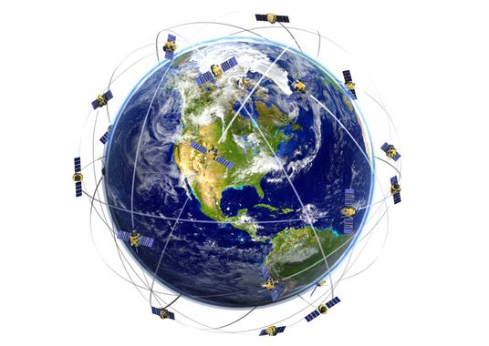
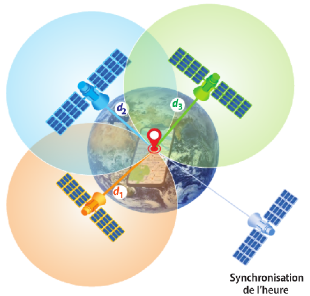

Compléments d'explications : Le Global Positioning System (GPS) est un système de positionnement par satellites conçu par et pour l'armée des États-Unis et sous son contrôle. Mis en place à des fins militaires à partir de 1973, le système avec 24 satellites est totalement opérationnel en 1995 et s'ouvre au civil en 2000. Le GPS nécessite d'être en permanence en contact avec 4 satellites. Son fonctionnement repose sur la méthode mathématique de trilatération qui est expliquée sur une autre page de ce site.   L'Europe (avec Galileo), la Chine (avec Beidou puis Compass), la Russie (avec GLONASS) et l'Inde (avec l'IRNSS), conscients de l'intérêt stratégique d'un tel système de positionnement par satellites développent depuis plusieurs années des systèmes concurrents.